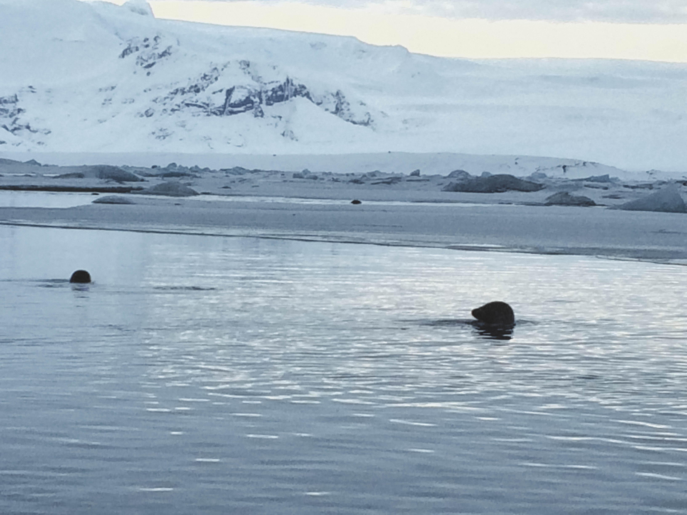
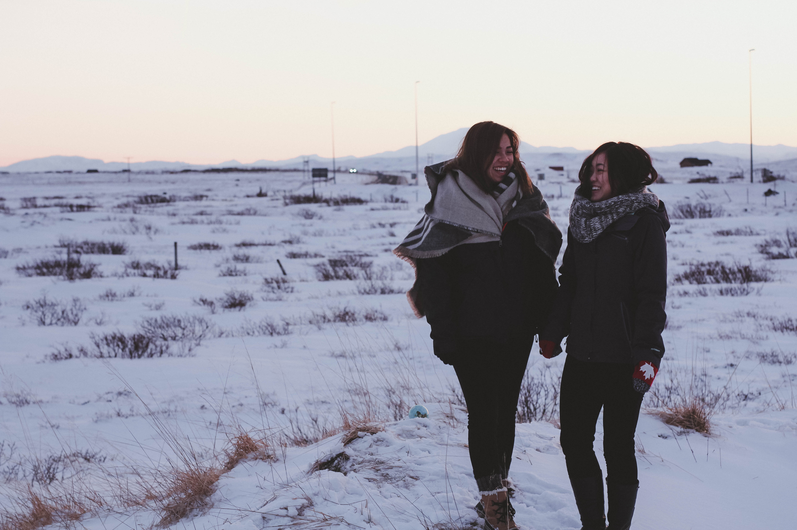

Iceland 2016
By the fall of 2015, I was completely healed from my thyroidectomy and was longing to continue my post-graduation travels but didn't want to travel alone. Jenny and I decided to put aside some time to pick a destination and just go for it. That destination turned out to be Iceland.
Jenny's friend, Mike, also came along with us and so the three of us booked a flight and travelled to Iceland for a week in February of 2016. Before I left for my trip, I was using my online dating app, OKcupid, and was in the middle of talking to Dan. We had met up a few times prior to my leaving for Iceland, but we kept in touch the entire time I was there.
The flight to Iceland wasn't too bad, only 5 hours. Once we landed, we picked up our rental car and drove to Reykjavik to our hotel. Reykjavik was our home stop and we ventured out for day trips and back to the hotel at night.
We had gone smack in the middle of the winter, so the landscape was a winter wonderland. We drove to Thingvellir National Park, Skógafoss, and Seljalandsfoss for beautiful icy waterfalls. Most of the trails were closed off for the winter so tourists would just go to see the sights of mothere nature.
At Jökulsárlón, a large glacial lake at the southern border of Iceland, we saw seals dancing and playing in the sub-zero water without a care in the world. During our drive around the island, we saw Icelandic horses grazing in the fields with their mighty coats to keep them warm. The diversity in wildlife never ceases to amaze me; we all live on one world, but thrive in such different climates.
Our adventurous side took us to an abandoned plane crash on Sólheimasandur. History says that it was a US plane that landed when it was low on fuel in 1973, but everyone on the plane survived. To this day, the remains just sit in the middle of what seemed like an endless beach. It was a good thing that our rental was a 4x4; the hardened ice made it almost impossible to get through and we saw many cars getting stuck in an effort to see this crash site.
Locals say that Iceland in the summer is a completely different experiences. The lands are supposedly green and lush and stunning to the eye. While I can't say that I will find myself in Iceland again in the near future, it was a worthwhile experience.





